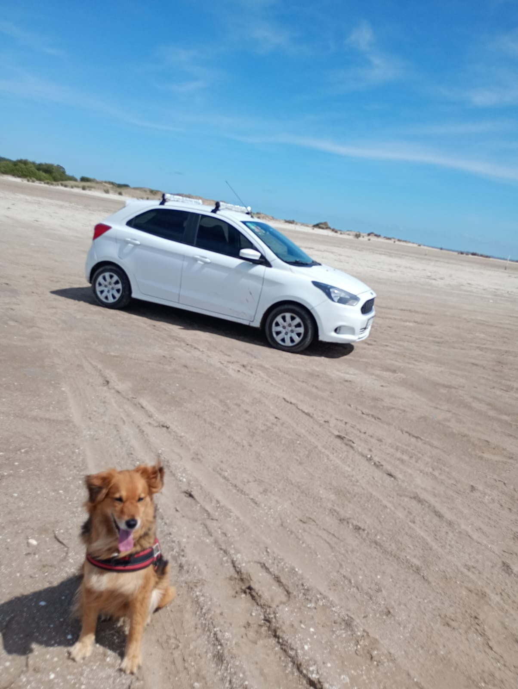
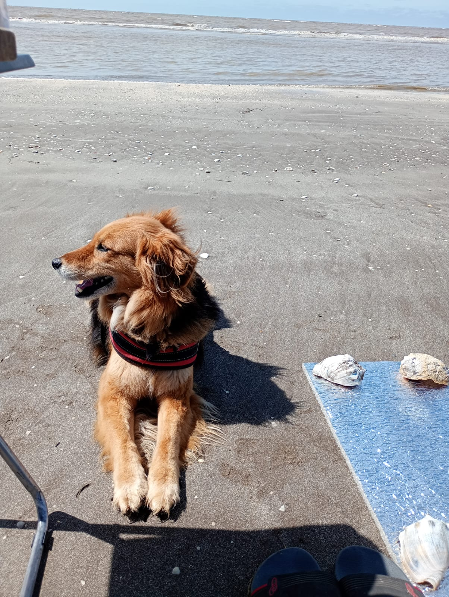

La vida de Gaia

Gaia, una perrita de mediana edad con pelaje negro y naranja, nació en Buenos Aires en mayo de 2020. Desde sus primeros días, mostró un espíritu vibrante y una energía contagiosa que conquistaron el corazón de todos a su alrededor. Su pelaje era una bella combinación de negro y naranja, con su cara, cabeza, patas, panza y cola teñidas de un vivo color naranja, mientras que su lomo era de un elegante negro.
Gaia creció en las bulliciosas calles de Buenos Aires, donde desarrolló un profundo amor por el tango, la pasión nacional. Julian, su dueño, la llevaba a las milongas y a los parques donde los músicos callejeros tocaban melodías de tango. Gaia se convirtió en una verdadera entusiasta del ritmo y, con el tiempo, aprendió a mover su cola y sus patas al compás de la música, impresionando a todos con su gracia y elegancia.
En 2022, Julian y Gaia se mudaron a Ituzaingó, buscando un ambiente más tranquilo y espacios verdes para que Gaia pudiera correr y explorar. Esta nueva ciudad se convirtió en su hogar, y Gaia rápidamente se adaptó a la nueva rutina de largas caminatas y aventuras al aire libre. Aunque extrañaba la vibrante vida de Buenos Aires, el encanto de Ituzaingó le ofreció nuevas oportunidades para descubrir y disfrutar.
Gaia no era una perrita común; tenía grandes sueños. Inspirada por las historias de líderes y figuras históricas que Julian le contaba, Gaia desarrolló una aspiración inusual: quería ser presidenta de Argentina. Imaginaba un país donde todos los perritos tuvieran un hogar amoroso y pudieran disfrutar de la vida tanto como ella. Su carisma, inteligencia y determinación la convirtieron en una figura querida y respetada en su comunidad.